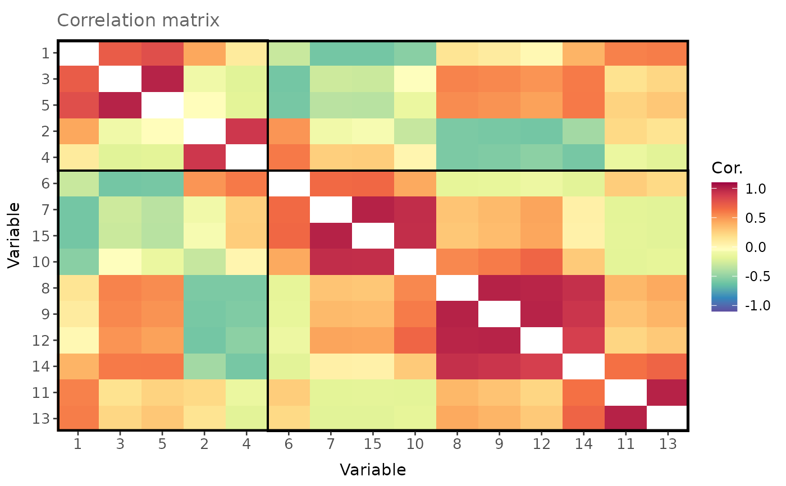

Simulate a reduced rank correlation matrix with multiple groups
Source:R/random_correlation_matrix.R
group_cor_mat.RdCreates a symmetric correlation matrix with user-defined structure, rank and groupings.
Usage
group_cor_mat(
n = c(5, 5),
within.cor = 0.5,
between.cor = 0.2,
range = NULL,
rank = 4,
skew = 0,
pos.def = FALSE,
small.positive = NULL,
return.groups = FALSE
)Arguments
- n
A vector defining the size of each group.
- within.cor
A vector defining the baseline correlation within each group. If only one value is supplied, all groups will be assigned the same correlation.
Note:-1 < within.cor < 1.- between.cor
A scalar defining the baseline correlation between groups.
Note:between.cor <= within.cor.- range
A scalar defining the range of correlations around the baseline. By default,
range = 1 - max(within.cor)which ensures the matrix is positive semi-definite. Note:max(within.cor) + range <= 1.- rank
A scalar defining the rank of the correlation matrix.
- skew
A scalar defining the skewness imposed on the correlations. Note:
-1 < skew < 1.- pos.def
When
TRUE(default isFALSE), the functionbendof the R package `mbend` is used to bend a non-positive (semi)-definite matrix to be positive (semi)-definite.- small.positive
Argument passed to
bendwhenpos.def = TRUE(default is 1e-8). Eigenvalues smaller thansmall.positiveare replaced by this.
Note:0 < small.positive < 0.1.- return.groups
When
TRUE(default isFALSE), a list is returned with additional entries containing the members of each group.
Value
A symmetric correlation matrix with defined rank and groupings.
When pos.def = TRUE, the correlation matrix is guaranteed to be positive (semi)-definite.
When return.groups = TRUE, a list is returned with additional entries containing the group members.
Examples
# Simulate and visualise a correlation matrix with 2 groups containing 5 and 10 members,
# correlations of 0.4 within groups and 0 between groups and rank equal to 4
cor_ls <- group_cor_mat(
n = c(5, 10),
within.cor = 0.4,
between.cor = 0,
rank = 4,
return.groups = TRUE
)
plot_matrix(
mat = cor_ls$cor.mat,
group.df = cor_ls$group.df,
order = TRUE
)
